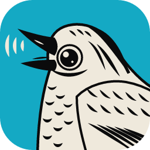

The apps need to be served over HTTP, not opened as files. From the folder above webdir, run python3 webdir/serve.py, then open http://localhost:8080/.
webdir
python3 webdir/serve.py
http://localhost:8080/
